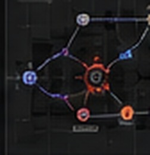
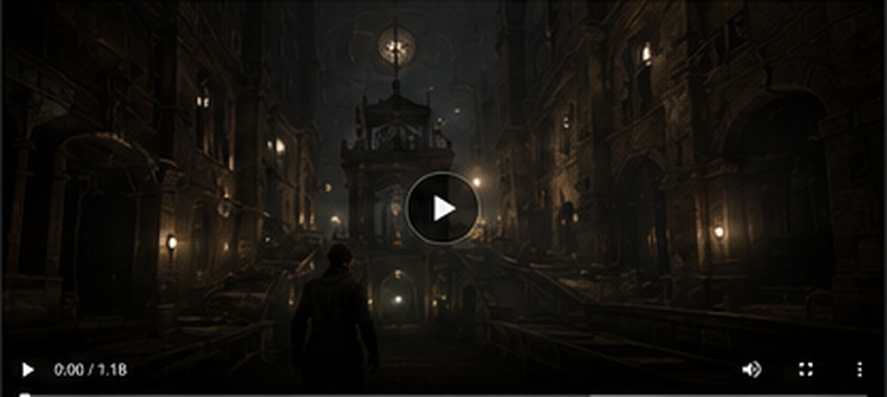

Technical Animation — Unreal Engine
Animation Systems Implemented for Gameplay
A dedicated technical-animation portfolio lane built from required degree work, integrated primarily into Hollow Graves so the examples function as production solutions rather than isolated exercises.

AnimBP
State Machines
State Machines

Control Rig
IK & Procedural
IK & Procedural

Sequencer
Event Tracks
Event Tracks
Mocap
Integration
Integration

Secondary
& Dynamic
& Dynamic

Root Motion
& Locomotion
& Locomotion
Featured Breakdowns
01
Gameplay Animation System
Locomotion, combat or interaction pipeline.
02
Control Rig & Procedural Adjustment
Runtime alignment, IK or additive behavior.
03
Sequencer as Gameplay Tool
Cameras, event tracks and Blueprint orchestration.
04
Mocap / Root / Secondary
Integration and cleanup shown in context.
Example: Sequencer + Event Tracks
Timeline Prototype
Camera Cuts
Character
Animation
Event Track
Blueprint Events